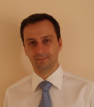

Mission Statement and Mandate
The Greek Space Agency is committed to promoting scientific advancement in space technologies, via collaboration with local and international industry and academia, while ensuring the realization of economic, industrial and social benefits for Greece.
Board of Directors
Dr. George A. Lampropoulos – President
Dr. George A. Lampropoulos has held the position of President with the Greek Space Agency since 2006. Dr. Lampropoulos holds a BSc from the University of Patras (Greece), and an MSc and a PhD from Queen’s University (Kingston, Ontario, Canada), all in Electrical Engineering.
Dr. Lampropoulos is an internationally recognized expert in the area of signal processing, having chaired several sessions of SPIE conferences, published/edited 13 books, and written and co-written over 200 papers in scientific journals and conference proceedings.
Dr. Lampropoulos has taught at the University of Toronto (Ontario, Canada), Laval University (Quebec, Canada) and Royal Military College of Canada (Kingston, Ontario), and is also the founder, President and CEO of A.U.G. Signals Ltd.
Dr. Maria Petrou – Secretary-General
Dr. Maria Petrou passed away in 2012. Her position remains vacant currently.
Dr. Maria Petrou, FREng, DSc, PhD, FCGI, FIAPR, FIET, FIoP, FBMVA, was the Director of the Informatics and Telematics Institute (ITI) of the Centre of Research and Technology, Hellas (CERTH), Professor of Signal Processing, Imperial College London, and founding member of GSA.
She served as the Chairman of the Technical Committee for Remote Sensing of the International Association of Pattern Recognition (IAPR), the Chairman of the British Machine Vision Association, as the Treasurer of IAPR, as a Trustee of the Institution of Engineering and Technology (IET), an Associate Editor of IEEE Transactions on Image Processing, as the Newsletter Editor of IAPR, as an editor of IEE Electronics Letters, as a Theme Leader for the Data and Information Fusion Defense Technology Centre, and as a member of many advisory boards and committees. She had published more than 350 scientific papers, three books, and had supervised to successful completion 41 PhD theses.
Dr. Vassilis Anastassopoulos – Vice-Secretary General
Dr. Vassilis Anastassopoulos received a BSc degree in Physics PhD in Electronics from the University of Patras, Greece. With over 80 published journal and conference papers, he worked for two years at various Canadian scientific institutions, and has been an academic staff member in Physics Department, University of Patras, Greece from 1987, having received full professorship in 2005. Dr. Anastassopoulos is currently the Vice Rector for Strategic Research Planning and Development with the University of Patras.
Dr. Anastassopoulos’s research interests are within the scope of digital signal processing, image processing, radar signal processing and remote sensing with emphasis on multi-spectral, SAR and infrared imagery, signal detection, pattern recognition, and information fusion including image fusion, decision fusion and sensor fusion architectures. In the last few years he has been involved in image processing techniques for astro-particle physics.
Prof. Nikolaos Uzunoglu – Vice Prsesident
Professor Nikolaos Uzunoglu carried his PhD in the field of propagation phenomena in satellite links in 1970’s and continued research and teaching at the National Technical University of Athens on the topics of Applied Electromagnetism, Telecommmunications, Radar Systems, Microwave and RF Systems, Antennas and applications of Electromagnetism in Biomedical Engineering. The Microwave and Fiber Optics Laboratory he directs is involved in numerous European Projects. He has coordinated the «Rural Wings» Integrated European Commission project concerning the pilot wide application of broadband satellite telecommunications to serve the needs of isolated communitites all over the Europe.
Dr. Vassilis Tsagaris – Treasurer
Vassilis Tsagaris received his BSc degree in Physics in 1997, his MSc in Electronics in 2000, and PhD in data fusion and remote sensing in 2006, all from the University of Patras. His research work is in the fields of image processing, data and sensor fusion and pattern recognition. He has published more than 20 journal and conference papers and participated in several national and European RTD projects. He serves as a reviewer for IEEE and SPIE journals and for European projects in the framework of the ARTEMISIA JTI. Today, he works in IRIDA Labs as Head of the Earth Observation Unit and as a post-doc researcher in the University of Patras.
Dr. Dimitris Manolakis – Trustee

Dimitris G. Manolakis attended the University of Athens, where he received a BS in physics and PhD in electrical engineering. He is currently a member of the technical staff at MIT Lincoln Laboratory, in Lexington, Massachusetts. Dr. Manolakis has taught at the University of Athens, Northeastern University, Boston College, and Worcester Polytechnic Institute.
Dr. Athansios Potsis – Vice Trustee

Dr. Thanasis Potsis holds a PhD degree in Electrical & Computer Engineering from the National Technical University of Athens, Greece. He also holds a Diploma in Electrical & Computer Technology from the University of Patras - Polytechnic School. Dr. Potsis is a Member and a scientific paper reviewer of IEEE, as well as of the Technical Chamber of Greece.
Dr. Potsis has worked at German Aerospace Centre (DLR), Institute of Radar Systems, from 1998 to 2001 as a Member of Scientific Staff in the Radar Digital Signal Processing Department; at the European Aeronautic Defense and Space Company – EADS from 2001 to 2003 as external technical consultant; at INTRACOM Defense Electronics from 2003 to 2006 as Product Marketing Engineer; and from 2006 to 2008 as Senior Manager at Epicos S.A. Since September 2008, Dr. Potsis has held the position of Senior Manager in the European Finance Associates Group of Companies, where he is responsible for the development of new business opportunities in the defence market in Greece and globally.
Dr. Potsis becane the first president of the Hellenic Association of Space Industries in 2009.
Athanassios Skodras – Chairman, Elections Committee

Dr. Athanassios N. Skodras received a BSc degree in Physics from Aristotle University of Thessaloniki, Greece, and MEng in Computer Engineering & Informatics and PhD in Electronics from University of Patras, Greece. Since 1986 he has been holding teaching and research positions at the Departments of Physics and Computer Engineering & Informatics of the University of Patras, and the Research Academic Computer Technology Institute, Patras. As of October 2002 he is Professor of Digital Systems and Head of Computer Science, School of Science and Technology, Hellenic Open University, Patras, Greece.
Dr. Skodras serves as an Associate Editor for the IEEE Signal Processing Letters, the Pattern Recognition and the Springer Journal Of Real-Time Image Processing, Vice Chair of the IEEE Greece Section, Chair of the IEEE Greece CAS & SSC Chapters, Chair of the Greek Association of Image Processing and Digital Media, and is the Technical Coordinator of the WG6 on image and video coding of the Greek Organization for Standardization. He has also served as the General Chair of the 16th IEEE Int. Conference on Digital Signal Processing and as the co-Chair of the 14th IEEE Int. Conference on Digital Signal Processing, and the Technical Program Committee Chair of the 13th IEEE Int. Conference on Digital Signal Processing.
Dr. Skodras is a Chartered Engineer, Senior Member of the IEEE, and member of the IET, EURASIP and the Technical Chamber of Greece.